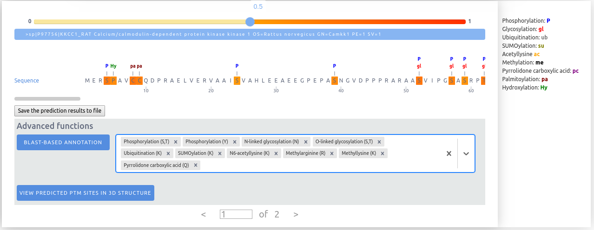
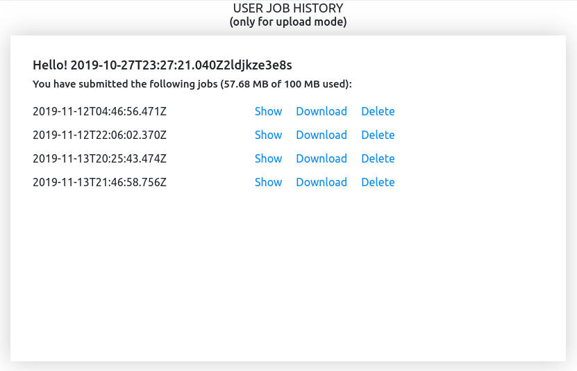
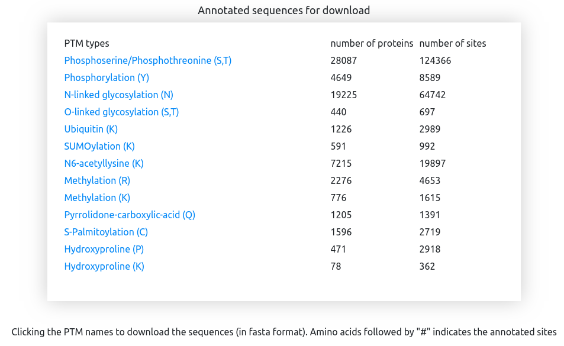
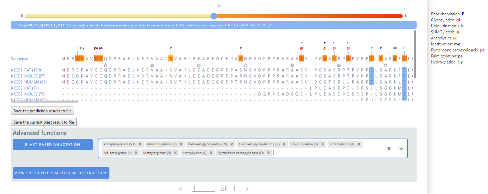
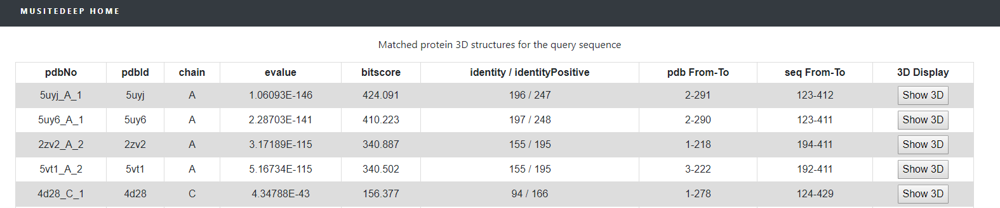
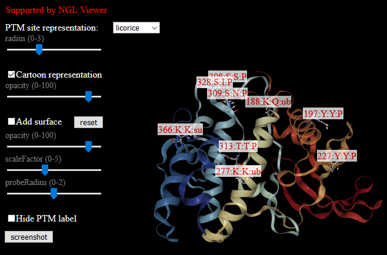

mRNALoc: a new deep-learning framework for multi-label mRNA subcellular localization prediction.
Browser compatibility:
| OS | Version | chrome | Firefox | Microsoft Edge | Safari |
| Linux | Ubuntu 16 | 75 | 70 | n/a | n/a |
| MacOS | HighSierra | 77 | 70 | n/a | 12.0 |
| Windows | 10 | 76 | 70 | 79 | n/a |
Our server has a variety of models built for predicting post-translational modification sites (PTMs). Users can simultaneously select multiple provided models for prediction using the multi-select drop down list.
Input:
The only input needed is protein sequences in the FASTA format. It accepts any alphabet characters, asterisks(*), hyphens(-), space, and line breaks. All characters will be coded as a special character "X" excluding the 20 common amino acids represented by: (A,C,D,E,F,G,H,I,K,L,M,N,P,Q,R,S,T,V,W,Y) for the prediction phase.
We provide two options for input：
1. Paste mode: users can paste up to 10 sequences or 5000 amino acids to the input panel. Upon clicking the button, the job will start immediately and return the result in real time. The job can be accessed later by checking the in the header.
2 Upload mode: for a larger-scale prediction task (a FASTA file is 10MB at most), users can upload a file in the FASTA format by clicking the upload a FASTA file. In this mode, once the job is submitted, it will be placed on a queue for processing. The job can be accessed later by the provided URL or checking the the in the header. In this mode, one user is allotted to process up to 5 jobs at the same time. For large-scale jobs, we suggest to download and run the standalone tool.
For both modes, the jobs' inputs and results will be saved on the server for 72 hours (up to 100MB).
Output:
After a job is finished, the result can be visualized for each input sequence one by one.
The predicted PTMs are labeled using their abbreviations on the top of the corresponding positions. Multiple labels are shown on top of one position if that position is predicted to have multiple PTMs. The highlighted colors of the predicted sites correspond to their prediction confidence levels (the highest confidence is used for multiple labels). Upon hoovering the mouse on the predicited sites, the detailed information of the prediction will be shown. A user may adjust the prediction confidence threshold using the slider to obtain more or fewer predicted sites. The default threshold is set to 0.5, meaning sites with confidence scores higher than 0.5 are predicted and highlighted as PTM sites.
By clicking the , the prediction results in the plain text will be saved.
Here lists an example of the result file:
| Position | Residue | PTMscores | Cutoff=0.5 |
|---|---|---|---|
| >sp|P97756|KKCC1_RAT | |||
| 3 | R | Methylarginine:0.026 | None |
| 4 | S | Phosphoserine:0.847;O-linked_glycosylation:0.096 | Phosphoserine:0.847 |
| 5 | P | Hydroxyproline:0.662 | Hydroxyproline:0.662 |
| 8 | C | S-palmitoyl_cysteine:0.884 | S-palmitoyl_cysteine:0.884 |
| 9 | C | S-palmitoyl_cysteine:0.799 | S-palmitoyl_cysteine:0.799 |
| 10 | Q | Pyrrolidone_carboxylic_acid:0.111 | None |
| 12 | P | Hydroxyproline:0.06 | None |
| 13 | R | Methylarginine:0.018 | None |
| 19 | R | Methylarginine:0.016 | None |
| 24 | S | Phosphoserine:0.509;O-linked_glycosylation:0.047 | Phosphoserine:0.509 |
| ... | ... | ... | ... |
| >sp|A9QT41|NEMO_PIG | |||
| 2 | S | Phosphoserine:0.103;O-linked_glycosylation:0.052 | None |
| 3 | R | Methylarginine:0.041 | None |
| 4 | T | Phosphothreonine:0.627;O-linked_glycosylation:0.041 | Phosphothreonine:0.627 |
| 5 | P | Hydroxyproline:0.466 | None |
| 8 | S | Phosphoserine:0.412;O-linked_glycosylation:0.17 | None |
| 9 | Q | Pyrrolidone_carboxylic_acid:0.348 | None |
| 10 | P | Hydroxyproline:0.17 | None |
| 11 | C | S-palmitoyl_cysteine:0.642 | S-palmitoyl_cysteine:0.642 |
| ... | ... | ... | ... |
Except for the first line of the file, which is the header, for each sequence, the first line is the sequence title (start with ">"), the following lines are the prediction results of the potential PTM positions, each line contains 4 columns and separated by the tab character ("\t"):
1 Position: the position of the potential PTM sites.
2 Residue: the amino acid code of the residue at the position.
3 PTMscores: the potential PTMs and their predicted confidence scores; multiple PTMs are separated by semicolon.
4 Cutoffs=0.5: the predicted PTMs whose scores are higher than the present cutoff; the default cutoff is 0.5, which can be changed according to the user’s selection.
User job history:
All the users’ submitted jobs will be saved in the server for 72 hours (up to 100MB) for the user to check anytime. By clicking in the header, an example of the job history is shown below: 
The jobs are listed in the chronological order of the job submission. Users can veiw, download, and delete the jobs. When viewing a job, the selected prediction models at the time of submission are shown as default selections for BLAST-BASED ANNOTATION. Users can still change them to run Blast.
Dataset:
The preprocessed PTM data from the UniProt/Swiss-Prot database is provided to download. By clicking the in the header, it shows the following page.

Stand-alone tool:
We also provide a stand-alone tool, which can be accessed by clicking
Other functions:
In the results panel, we provide several advanced functions:
1 Blast-based annotation:
This function will be activated by clicking . It will do the Blast for the current sequence and presents its homologous sequences and their existing PTM annotations (from UniProt/Swiss-Prot database) in blue color according to the PTM type that the user select.
The output is :

Users can refer to the sequence in UniProt/Swiss-Prot database by clicking the sequence title.
Users can click the button to save the blast output to a file named "blastresult.txt".
Here shows an example of the result file:
>sp|P97756|KKCC1_RAT Calcium/calmodulin-dependent protein kinase kinase 1 OS=Rattus norvegicus GN=Camkk1 PE=1 SV=1
MERSPAVCCQDPRAELVERVAAISVAHLEEAEEGPEPASNGVDPPPRARAASVIPGSASRPTPVRPSLSARKFSLQERPAGSCLEAQVGPYSTGPASHMSPRAWRRPTIESHHVAISDTEDCVQLNQYKLQSEIGKGAYGVVRLAYNEREDRHYAMKVLSKKKLLKQYGFPRRPPPRGSQAPQGGPAKQLLPLERVYQEIAILKKLDHVNVVKLIEVLDDPAEDNLYLVFDLLRKGPVMEVPCDKPFPEEQARLYLRDIILGLEYLHCQKIVHRDIKPSNLLLGDDGHVKIADFGVSNQFEGNDAQLSSTAGTPAFMAPEAISDTGQSFSGKALDVWATGVTLYCFVYGKCPFIDEYILALHRKIKNEAVVFPEEPEVSEELKDLILKMLDKNPETRIGVSDIKLHPWVTKHGEEPLPSEEEHCSVVEVTEEEVKNSVKLIPSWTTVILVKSMLRKRSFGNPFEPQARREERSMSAPGNLLLKEGCGEGGKSPELPGVQEDEAAS
KKCC1_RAT (100) 67:Phosphoserine;74:Phosphoserine;78:Asymmetric dimethylarginine;100:Phosphoserine;108:Phosphothreonine;458:Phosphoserine;475:Phosphoserine;492:Phosphoserine;
MERSPAVCCQDPRAELVERVAAISVAHLEEAEEGPEPASNGVDPPPRARAASVIPGSASRPTPVRPSLSARKFSLQERPAGSCLEAQVGPYSTGPASHMSPRAWRRPTIESHHVAISDTEDCVQLNQYKLQSEIGKGAYGVVRLAYNEREDRHYAMKVLSKKKLLKQYGFPRRPPPRGSQAPQGGPAKQLLPLERVYQEIAILKKLDHVNVVKLIEVLDDPAEDNLYLVFDLLRKGPVMEVPCDKPFPEEQARLYLRDIILGLEYLHCQKIVHRDIKPSNLLLGDDGHVKIADFGVSNQFEGNDAQLSSTAGTPAFMAPEAISDTGQSFSGKALDVWATGVTLYCFVYGKCPFIDEYILALHRKIKNEAVVFPEEPEVSEELKDLILKMLDKNPETRIGVSDIKLHPWVTKHGEEPLPSEEEHCSVVEVTEEEVKNSVKLIPSWTTVILVKSMLRKRSFGNPFEPQARREERSMSAPGNLLLKEGCGEGGKSPELPGVQEDEAAS
KKCC1_MOUSE (97) 67:Phosphoserine;74:Phosphoserine;78:Asymmetric dimethylarginine;100:Phosphoserine;108:Phosphothreonine;458:Phosphoserine;475:Phosphoserine;492:Phosphoserine;
MESGPAVCCQDPRAELVDRVAAINVAHLEEADEGPEPARNGVDPPPRARAASVIPGSASRPTPVRPSLSARKFSLQERPAGSCLGAQVGPYSTGPASHISPRSWRRPTIESHRVAISDTEDCVQLNQYKLQSEIGKGAYGVVRLAYNESEDRHYAMKVLSKKKLLKQYGFPRRPPPRGSQATQGGPAKQLLPLERVYQEIAILKKLDHVNVVKLIEVLDDPAEDNLYLVFDLLRKGPVMEVPCDKPFPEEQARLYLRDIILGLEYLHCQKIVHRDIKPSNLLLGDDGHVKIADFGVSNQFEGNDAQLSSTAGTPAFMAPEAISDSGQSFSGKALDVWATGVTLYCFVYGKCPFIDDYILTLHRKIKNEAVVFPEEPEVSEDLKDLILRMLDKNPETRIGVSDIKLHPWVTKHGEEPLPSEEEHCSVVEVTEEEVKNSVRLIPSWTTVILVKSMLRKRSFGNPFEPQARREERSMSAPGSLLMKEGCGEGCKSPELPGVQEDEAAS
KKCC1_HUMAN (96) 67:Phosphoserine;74:Phosphoserine;78:Asymmetric dimethylarginine;100:Phosphoserine;108:Phosphothreonine;458:Phosphoserine;475:Phosphoserine;492:Phosphoserine;
MEGGPAVCCQDPRAELVERVAAIDVTHLEEADGGPEPTRNGVDPPPRARAASVIPGSTSRLLPARPSLSARKLSLQERPAGSYLEAQAGPYATGPASHISPRAWRRPTIESHHVAISDAEDCVQLNQYKLQSEIGKGAYGVVRLAYNESEDRHYAMKVLSKKKLLKQYGFPRRPPPRGSQAAQGGPAKQLLPLERVYQEIAILKKLDHVNVVKLIEVLDDPAEDNLYLVFDLLRKGPVMEVPCDKPFSEEQARLYLRDVILGLEYLHCQKIVHRDIKPSNLLLGDDGHVKIADFGVSNQFEGNDAQLSSTAGTPAFMAPEAISDSGQSFSGKALDVWATGVTLYCFVYGKCPFIDDFILALHRKIKNEPVVFPEEPEISEELKDLILKMLDKNPETRIGVPDIKLHPWVTKNGEEPLPSEEEHCSVVEVTEEEVKNSVRLIPSWTTVILVKSMLRKRSFGNPFEPQARREERSMSAPGNLLVKEGFGEGGKSPELPGVQEDEAAS
KKCC2_RAT (79) 74:Phosphoserine;100:Phosphoserine;458:Phosphoserine;475:Phosphoserine;
-----------------------------------------------------LPLDASEPE-SRSLLSGGKMSLQERSQG------------GPASSSSPRMPRRPTVESHHVSITGLQDCVQLNQYTLKDEIGKGSYGVVKLAYNENDNTYYAMKVLSKKKLIRQAGFPRRPPPRGTRPAPGGCIQPRGPIEQVYQEIAILKKLDHPNVVKLVEVLDDPNEDHLYMVFELVNQGPVMEVPTLKPLSEDQARFYFQDLIKGIEYLHYQKIIHRDIKPSNLLVGEDGHIKIADFGVSNEFKGSDALLSNTVGTPAFMAPESLSETRKIFSGKALDVWAMGVTLYCFVFGQCPFMDERIMCLHSKIKSQALEFPDQPDIAEDLKDLITRMLDKNPESRIVVPEIKLHPWVTRHGAEPLPSEDENCTLVEVTEEEVENSVKHIPSLATVILVKTMIRKRSFGNPFE-GSRREERSLSAPGNLLTKK---------------------
KKCC2_MOUSE (78) 74:Phosphoserine;96:Phosphoserine;458:Phosphoserine;475:Phosphoserine;
------------------------------------------DQPPEADGQE-LPLEASDPESRSP-LSGRKMSLQE-------PSQGGPASSSNSLDMNGRCIRRPTVESHHVSITGLQDCVQLNQYTLKDEIGKGSYGVVKLAYNENDNTYYAMKVLSKKKLIRQAGFPRRPPPRGARPAPGGCIQPRGPIEQVYQEIAILKKLDHPNVVKLVEVLDDPNEDHLYMVFELVNQGPVMEVPTLKPLSEDQARFYFQDLIKGIEYLHYQKIIHRDIKPSNLLVGEDGHIKIADFGVSNEFKGSDALLSNTVGTPAFMAPESLSETRKIFSGKALDVWAMGVTLYCFVFGQCPFMDERIMCLHSKIKSQALEFPDQPDIAEDLKDLITRMLDKNPESRIVVPEIKLHPWVTRHGAEPLPSEDENCTLVEVTEEEVENSVKHIPSLATVILVKTMIRKRSFGNPFE-GSRREERSLSAPGNLLTKK---------------------
KKCC2_HUMAN (78) 74:Phosphoserine;83:Phosphoserine;92:Phosphoserine;96:Phosphoserine;100:Phosphoserine;458:Phosphoserine;475:Phosphoserine;
----------------------------------------------------------------RPHLSGRKLSLQERAAGGSLDMNICPYSPVSSPQSSPRLPRRPTVESHHVSITGMQDCVQLNQYTLKDEIGKGSYGVVKLAYNENDNTYYAMKVLSKKKLIRQAGFPRRPPPRGTRPAPGGCIQPRGPIEQVYQEIAILKKLDHPNVVKLVEVLDDPNEDHLYMVFELVNQGPVMEVPTLKPLSEDQARFYFQDLIKGIEYLHYQKIIHRDIKPSNLLVGEDGHIKIADFGVSNEFKGSDALLSNTVGTPAFMAPESLSETRKIFSGKALDVWAMGVTLYCFVFGQCPFMDERIMCLHSKIKSQALEFPDQPDIAEDLKDLITRMLDKNPESRIVVPEIKLHPWVTRHGAEPLPSEDENCTLVEVTEEEVENSVKHIPSLATVILVKTMIRKRSFGNPFE-GSRREERSLSAPGNLLTKK---------------------
KKCC_CAEEL (71)
--------------------------------------------------------------------------------------EAGPHSSNNAATMSPNL-SRPTRYVKSVSQQRSESYIQLNQYRLMEEIGQGSYGIVKLAYNEEDKNLYALKVLDKMKLLKNFACFRQPPPRRNKE-NAAPSVLRNPLQLVQKEIAILKKLSHPNVVKLVEVLDDPNDNYLYMVFEFVEKGSILEIPTDKPLDEDTAWSYFRDTLCGLEYLHYQKIVHRDIKPSNLLLSDIGQVKIADFGVSCEFEGIDAFLSGTAGTPAFMAPEALTEGANHFSGRAQDIWSLGITLYAFVIGTVPFVDNYIIALHKKIKNDPIVFPEAPILSEALQDIILGMLKKDPGHRLMLHEVKVHTWVTRDGTVPMSSEQENCHLVTVTEEEIENCVRVIPRLDTLILVKAMGHRKRFGNPF------------------------------------------
The first two lines represent the ID and sequence of the query sequence, and the following lines are the aligned sequences by Blast with the PTM annotations in the Uniprot/Swiss-Prot database. Each alignment result consists of two lines: the first line contains the Uniprot sequence access ID, the Blast identity in the parenthesis, the selected PTM types for annotations and the corresponding positions (according to the position of the query sequence) that have the annotations; the second line contains the aligned amino acids, with hyphens "-" representing the unaligned ones.
2 View predicted PTM sites in 3D structure:
This function provides the visualization of the predicted PTM sites in the context of protein 3D structure. Once click the button, the list of homologous proteins that have known 3D structures will be shown:

Users can choose one protein and by clicking the button the 3D structure with the information of the predicted PTM sites will be shown in a new page.
Here is an example:
The highlighted labels represent the information of the predicted sites, which contains the position on the query sequence, the amino acid from the query sequence to the mapped PDB sequence, and the predicted PTM types (in abbreviation) for this site. Multiple PTMs are separated by comma ",". The default representation of the PTM sites and structrues will be shown at the first time and users can make slightly changes by tuning the parameters. Users are suggested to add the surface by checking the "Add surface" box.